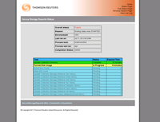

- 
K.U.L.A.
CARD GAME SUITE
CARD GAME SUITE

For a class project, my team and I wanted to develop an online, multiplayer card game suite built to run in your browser. We wanted the game to be fully accessible without any additional software (like Adobe Flash). The two games, Hearts and crazy eights, run entirely within HTML pages with JavaScript and jQuery.
- Implemented game engine for Hearts and Crazy Eights using JSP and AJAX servlet calls for updating between players
- Designed and developed UI elements for both games using jQueryUI, animations, and CSS
- Built lobby to view and create games, and to launch the game after one is joined
| MIDDLETIER MIGRATION |
The MiddleTier is Thomson's name for the application that coordinates front-end requests and back-end processing for their main product, Westlaw. I worked with my team leader to migrate the MiddleTier from IBM Websphere to Tomcat, which would save Thomson the fees associated with Websphere.
- Debug and fix Websphere-specific bugs and rework them for Tomcat
- Gained a little experience in IBM Websphere and associated IBM subsystems
NOVUS STORAGE REPORTS
Internal tool to control and monitor a daily job that processes hundreds of thousands of SQL rows from several locations and consolidates the needed data to another location, where it is used by multiple teams.
- UI to view real-time status of a job in progress
- Added timers and UI to view a process time breakdown data for jobs
- General maintenance and on-going support
DATASECURE APPLIANCE TESTING TOOL
A web-based tool that provided a UI and back-end to support testing the status and consistency of various Ingrian appliances at Thomson. The appliances provided encryption/decryption services to the company's key products. I was tasked with developing this simple tool from the ground up.
- Built from scratch to run on a Tomcat server
- Desgined and implemented efficient one page UI using AJAX and jQuery
- Included 3 ways to test: Manual (input all parameters), Default (ran a test set against selected appliances), File (ran a test set from an uploaded file against selected appliances)
- Testing is accomplished through AJAX calls to a servlet, which uses Java to run the tests themselves and respond with JSON data
| MYVITALSIGNS |

Large application used internally by many other teams to monitor applications, view historic data, submit requests, generate reports, and more. The architecture is based on tabs and widgets, which can be customized for each user.
- On-going support including handling customer issues and requests, fixing bugs, and implementing new enhancements
- Enhanced several features in an exportable PowerPoint, gaining experience in OpenXML and using PowerPoint templates
- Implemented new widgets by customer request, gaining experience in Linq, dotNetCharting, and lots of SQL
| DOCTOR ZEUS |
Developed from scratch by another Maverick intern and myself, Doctor Zeus is a replacement/consolidation of a few older features on existing tools. The internal tool would be used by Thomson groups to determine what servers mapped to 'vips' and groups, and to compare system information, environment variables, and other data between any number of servers.
- Developed custom tree view for the box hierarchy that allows multiple selections for comparison
- Desgined and implemented comparator servlet and web view
- Worked with teammate on designing overall menu and page design